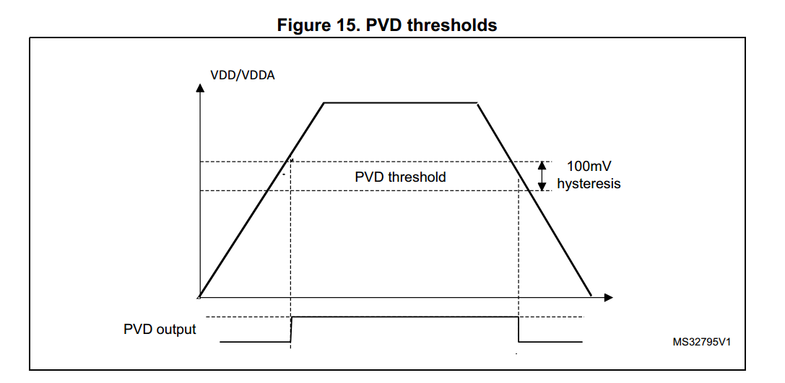
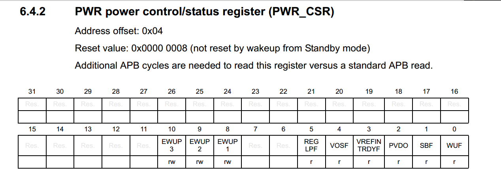

我的PVD的驱动以及例程位于STM32L0xx_Drivers这个库当中，在使用前最好先阅读readme.md文件
PVD 是一种检测MCU供电情况的技术。当供电电压高于或者低于一定阈值的时候，可以在寄存器上体现出来，或者直接产生硬件中断。
在实际使用MCU时，特别是电池供电的方案中，往往会遇到供电不够导致MCU或者外设工作不正常的情况。PVD在这个时候就可以派上用场了。
PVD的使用按照数据手册上的说明，就是首先设置PVD阈值（PVD thresholds），当MCU的VDD引脚的电压高于阈值时，则PVD output=1，当VDD电压低于阈值时，PVD output=0，如下图所示：

其中PVD output的结果可以再在存器中查看到


关于PVD的阈值的设定共有两种方式：
- 固定阈值(1.9V 2.1V 2.3V 2.5V 2.7V 2.9V 3.1V)
- 与引脚比较（PB7）
在实际使用的过程中,PVD可以用查询挥着中断的方式来工作。
在测试的例程中，我配置PVD工作方式为中断上升下降沿触发，当VDD高于预设PVD阈值或者低于阈值而产生边沿触发时，都会形成一次PVD中断，然后读取PWR_CSR的PVDO标志位检查是低电压提醒还是高电压提醒，以此来达到监控MCU供电情况的目的。
注意：当使用PVD功能检测低电压时，VDD电压刚刚小于阈值时并不会直接产生PVD中断，只有当VDD电压小于（阈值-50MV）时，才会产生中断。
如果有什么疑问或者错误欢迎大家指正，email:454626653@qq.com